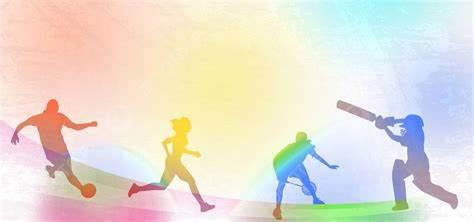

I. Introduction à la Maison des Ligues de Lorraine
La Maison des Ligues de Lorraine (MDL), située dans la ville de Nancy,
est une institution régionale qui a été créée pour centraliser les
activités des ligues sportives au sein de la région Lorraine. Elle
regroupe une grande variété de fédérations sportives qui couvrent
différentes disciplines, allant des sports individuels comme
l'athlétisme, jusqu'aux sports collectifs tels que le football et le
basketball. Son rôle ne se limite pas simplement à être un lieu
physique où ces organisations se retrouvent, mais elle sert aussi de
plateforme de coordination pour favoriser l'harmonisation des actions
et le développement du sport au sein de la région. Cette institution a
vu le jour dans le cadre d’un besoin croissant d’optimisation et de
structuration du mouvement sportif en Lorraine. En effet, avant sa
création, les ligues et clubs fonctionnaient de manière souvent
isolée, ce qui pouvait entraîner des redondances et une faible
mutualisation des ressources. La MDL a été pensée pour combler ces
lacunes en fournissant aux associations et aux fédérations sportives
un cadre de travail collectif et une infrastructure commune. De cette
manière, la Maison des Ligues joue un rôle clé dans l’évolution et
l’amélioration des pratiques sportives à travers la région.

II. Rôle et Fonctions de la MDL
La Maison des Ligues de Lorraine s'érige comme un centre névralgique
pour l'ensemble du mouvement sportif régional. Sa mission première est
de fournir un soutien logistique, matériel, et administratif aux
ligues qui y sont rattachées. Elle leur offre des espaces de travail,
des salles de réunion, des infrastructures adaptées pour organiser des
formations et des événements. Ce soutien permet aux ligues de se
concentrer pleinement sur leurs objectifs sportifs tout en ayant accès
à des ressources qui simplifient leur gestion quotidienne. L’une des
fonctions essentielles de la MDL est la formation des cadres sportifs.
Elle propose régulièrement des stages et des sessions de formation qui
permettent aux entraîneurs, aux dirigeants et aux bénévoles d’acquérir
de nouvelles compétences, tant dans le domaine technique que dans la
gestion des clubs et associations. Ces formations portent sur une
variété de sujets allant des techniques d’entraînement, à la gestion
des finances, en passant par les aspects juridiques et réglementaires
du sport. En outre, la MDL facilite la mutualisation des compétences
et des connaissances. Grâce à son rôle de centralisation, les ligues
sportives de la région peuvent collaborer plus facilement, échanger
des idées et partager leurs expériences. Cela renforce non seulement
la cohésion entre les différents acteurs du sport, mais permet aussi
d’éviter les doublons dans les initiatives. Par exemple, si plusieurs
ligues partagent un besoin commun, comme l’organisation d’un grand
événement sportif, elles peuvent mutualiser leurs ressources et
travailler de manière collective sous la supervision de la MDL. Enfin,
la MDL a une fonction d'accompagnement en matière juridique,
administrative et financière. Elle aide les clubs à naviguer dans les
complexités légales qui régissent le monde du sport, notamment en ce
qui concerne la gestion des associations, les contrats, les
subventions, et la gestion des ressources humaines. Cette assistance
est cruciale pour les clubs qui, souvent, manquent de l’expertise
nécessaire pour se professionnaliser et se développer de manière
durable.
III. Impact sur le Sport en Lorraine
L’existence de la Maison des Ligues de Lorraine a eu un impact
significatif sur la structuration et la dynamique du sport dans la
région. En regroupant un grand nombre de ligues et en offrant un
soutien adapté à leurs besoins, elle a permis d'améliorer la qualité
des infrastructures sportives et de favoriser la professionnalisation
des clubs. Cela a conduit à une plus grande visibilité des disciplines
sportives locales, à la fois sur la scène régionale et nationale. Un
des effets notables de la MDL est sa capacité à organiser de grands
événements sportifs régionaux. Grâce à la coordination des différentes
ligues, la MDL a permis la mise en place de compétitions
interrégionales, qui non seulement font rayonner le sport en Lorraine,
mais contribuent également à l’économie locale. Par exemple, des
événements comme des tournois de football ou des championnats
d’athlétisme attirent non seulement des athlètes de haut niveau, mais
également des spectateurs, des sponsors et des partenaires
institutionnels, favorisant ainsi un développement durable du sport
régional. Un autre aspect important est l’attention que la MDL porte à
l'inclusion sociale par le sport. Elle soutient activement des
initiatives visant à rendre le sport accessible à tous, indépendamment
de l’âge, du sexe, ou de la condition physique. Par exemple, des
programmes spécifiques pour les jeunes en difficulté ou pour les
personnes en situation de handicap ont été mis en place grâce à la
MDL. Ce travail sur l’inclusion contribue à renforcer le lien social à
travers le sport, et permet d'utiliser ce dernier comme un vecteur
d'intégration sociale et d'égalité des chances. La MDL participe aussi
à la découverte et au développement des jeunes talents sportifs. En
fournissant un encadrement professionnel et des opportunités de
formation dès un jeune âge, elle permet aux jeunes athlètes de
progresser dans des conditions optimales. Grâce à cela, plusieurs
talents régionaux ont pu émerger et poursuivre une carrière au niveau
national voire international, apportant ainsi une reconnaissance
supplémentaire au mouvement sportif lorrain.
Conclusion
En résumé, la Maison des Ligues de Lorraine est une structure
indispensable pour le développement du sport dans la région Lorraine.
Grâce à ses missions de coordination, de formation, et de soutien
logistique, elle permet aux ligues et clubs sportifs de fonctionner de
manière plus efficace et professionnelle. Elle offre des ressources
précieuses et des opportunités de mutualisation qui favorisent la
coopération entre les différents acteurs du sport régional. Enfin, son
impact sur la promotion du sport, l’inclusion sociale et le
développement des jeunes talents montre l’importance de la MDL dans
l’épanouissement du sport en Lorraine, tout en consolidant les valeurs
d’entraide et de solidarité propres à l’esprit sportif.